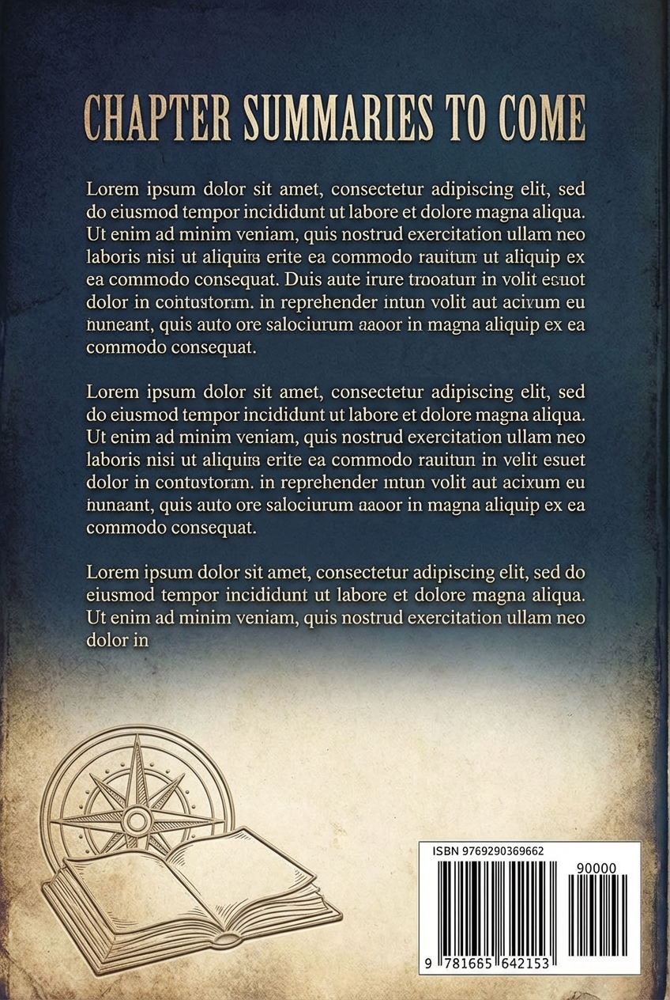

An Illustrated Summary
# Castle of Indolence
Nestled within a broad expanse of the Hudson River, where Dutch navigators of old would shorten sail and invoke the protection of St. Nicholas upon crossing the Tappan Zee, lies the drowsy village of Tarry Town—so named, they say, for the tendency of local husbands to linger overlong at the tavern. Not two miles distant rests a sequestered glen, cradled among high hills, where a brook murmurs softly and the only sounds disturbing the profound stillness are the whistle of a quail or the tapping of a woodpecker. This enchanted hollow, home to descendants of the original Dutch settlers, has long borne the name Sleepy Hollow, for a dreamy influence pervades its very atmosphere, bewitching all who dwell there with visions, trances, and marvelous beliefs. Chief among the spectral inhabitants haunting this region is the Headless Horseman—said to be the ghost of a Hessian trooper who lost his head to a cannonball during the Revolutionary War and now rides nightly in furious quest of it.
Into this spell-bound valley came Ichabod Crane, a lanky Connecticut schoolmaster whose angular frame and long snipe nose made him resemble nothing so much as a scarecrow eloped from a cornfield. Though he ruled his humble schoolhouse with the birch rod, Ichabod tempered justice with discrimination, reserving the severest corrections for the sturdiest Dutch urchins while showing leniency to the meek. His meager salary compelled him to board among the families of his pupils, rendering himself useful by assisting with farm labor and ingratiating himself with mothers by dandling their children. He served also as the neighborhood's singing-master, and his nasal melodies echoing from the church gallery were a source of considerable personal vanity.
Ichabod possessed an insatiable appetite for the marvelous, devouring Cotton Mather's tales of witchcraft and spending long evenings with Dutch wives listening to stories of ghosts, goblins, and particularly the Galloping Hessian. Yet the terrors these tales conjured during his solitary walks home through the darkened countryside were as nothing compared to the perplexity visited upon him by a woman—Katrina Van Tassel, the coquettish daughter of a prosperous Dutch farmer whose abundant lands and groaning larder set Ichabod's imagination aflame with visions of roasted pigs and juicy hams, of turning such wealth to cash and striking westward.
Standing formidably between Ichabod and his ambitions was Brom Bones, a burly, roystering hero whose feats of strength made him the undisputed champion of the countryside and whose rough gallantries had long been directed at the blooming Katrina. Too prudent to challenge such a rival openly, Ichabod pursued his courtship quietly, suffering the practical jokes Brom and his gang inflicted upon him until, one fine autumn afternoon, an invitation arrived to a quilting frolic at Van Tassel's mansion.
Mounted upon the broken-down plow-horse Gunpowder, Ichabod cut a grotesque figure as he shambled through the golden autumn landscape toward the festivities, where he feasted magnificently and danced with such abandon that he captured the admiration of all assembled. But something went amiss during his private interview with Katrina, for he departed crestfallen, riding homeward through the witching darkness with all the ghost stories he had heard that evening crowding upon his mind. Near the haunted bridge by the old church, a monstrous figure on a powerful black steed emerged from the shadows—headless, carrying its ghastly burden upon the pommel of its saddle. A desperate chase ensued, ending with the goblin hurling its head at the terrified schoolmaster.
Come morning, only Ichabod's hat and a shattered pumpkin were found beside the bridge. The schoolmaster vanished from Sleepy Hollow forever, though rumors eventually surfaced that he had fled to a distant county, studied law, and become a justice. Brom Bones, who soon after led Katrina triumphantly to the altar, always laughed knowingly when the tale was told—yet the old country wives maintain to this day that Ichabod was spirited away by supernatural means, and plowboys loitering homeward still fancy they hear his melancholy psalm tunes drifting through the tranquil solitudes of that haunted glen.
# Found in the Handwriting of Mr. Knickerbocker
The tale now committed to these pages came to the chronicler's ears in very nearly the same fashion as it has been set down here—related aloud at a Corporation meeting in the venerable city of Manhattoes, where the most distinguished and sagacious burghers of that ancient place had gathered in their customary assembly. The gentleman who delivered the narrative was a figure of pleasant, if somewhat careworn, aspect: shabby in his pepper-and-salt attire, bearing a face that mingled sadness with good humor in equal measure, and carrying about him the unmistakable air of one whose purse had grown lighter than his spirits. Indeed, one could not help but suspect that his considerable efforts to amuse the company sprang from circumstances that made entertainment a necessity rather than a mere pastime.
When at last the story reached its conclusion, laughter and approval rippled through the assembled worthies—most enthusiastically, it must be noted, from two or three deputy aldermen who had spent the better portion of the telling in peaceful slumber and therefore greeted the ending with the fresh delight of men who had missed everything preceding it. Yet not all present surrendered so readily to merriment. One gentleman in particular, tall and dry in his bearing, with eyebrows that beetled most formidably over a grave and rather severe countenance, remained unmoved throughout the general hilarity. He folded his arms, inclined his head, and fixed his gaze upon the floor with the deliberate air of a man turning some weighty doubt over in his mind. Here was one of those cautious souls who refuses to laugh except upon the firmest of grounds—when reason and law stand squarely on his side.
Once the company's mirth had run its course and silence settled once more upon the room, this skeptical gentleman assumed a posture of judicial inquiry, one arm resting upon the elbow of his chair, the other planted akimbo at his side. With a slight but exceedingly sage motion of his head and a pronounced contraction of his brow, he demanded to know what moral the story intended to convey and what, precisely, it went to prove.
The storyteller, who had just raised a glass of wine to his lips as rightful refreshment after his labors, paused in his motion. He regarded his interrogator with an expression of infinite deference before lowering the glass slowly to the table. The tale, he explained with mock gravity, was intended most logically to demonstrate that no situation in life exists without its advantages and pleasures—provided one possesses the wit to take a joke as it comes. Furthermore, he who chooses to run races with goblin troopers must expect rough riding for his troubles. And therefore—ergo—for a country schoolmaster to be refused the hand of a Dutch heiress constitutes nothing less than a certain step toward high preferment in the state.
The cautious gentleman knit his brows tenfold closer at this explanation, finding himself sorely puzzled by such peculiar ratiocination, while the shabby fellow in pepper-and-salt regarded him with something approaching a triumphant leer. At length the skeptic observed that this was all very well, but he thought the story rather extravagant—there were one or two points upon which he entertained serious doubts.
"Faith, sir," replied the storyteller with a careless wave, "as to that matter, I don't believe one-half of it myself."
And so the tale passes from the narrator's lips into the chronicler's hands, carrying with it all the mischief and mystery that such stories tend to accumulate—leaving the reader to determine what portion, if any, deserves belief.
